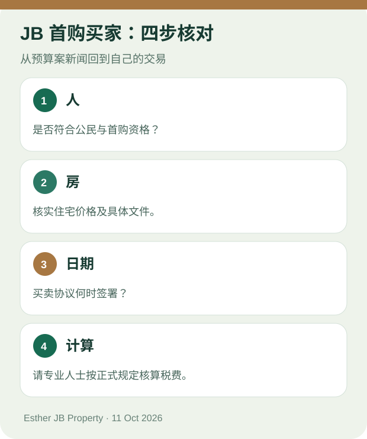

新山买家指南 · 资料核对：2026 年 10 月 11 日
2027 预算案首购买房五问：先搞清楚，再看房
先看结论：符合现行条件的马来西亚公民，购买不超过 RM500,000 的首间住宅，已有印花税全额豁免安排；2027 预算案建议延续安排，并把部分豁免扩大到不超过 RM750,000 的首间住宅。是否适用于你，要按最终规定、签约日期和具体文件核对。财政部税务措施附件 16

原创核对示意图；不是个案税费计算表。
1. 现在是 2026 年，RM500,000 以下首购一定要等明年吗？
**不一定。**财政部文件列出的现行安排，已给予符合条件的马来西亚公民购买不超过 RM500,000 的首间住宅，其贷款协议与产权转让文书印花税全额豁免；相关买卖协议日期范围列为 2021 年 1 月 1 日至 2027 年 12 月 31 日。最终资格仍要按你的交易文件核对。财政部税务措施附件 16
2. RM500,000 以上、RM750,000 以下，新的豁免现在就能用吗？
**不要先当成已适用。**预算案建议：对符合条件的首间住宅，首 RM500,000 部分全额豁免，超过 RM500,000 至 RM750,000 的部分豁免 50%；建议涉及 2027 年 1 月 1 日至 2030 年 12 月 31 日签订的买卖协议。签约前请核对正式实施规定和适用文件。财政部税务措施附件 16
3. RM750,000 的房子，是否全部免印花税？
**不是预算案写的意思。**建议是分段豁免，并非把不超过 RM750,000 的房子全部费用归零。也不要把“房价的 50%”误读成税款或房价减半。确切税额应由处理交易的专业人士按正式规定和文件计算。财政部税务措施附件 16
4. SJKP 有 RM200 亿担保，我的贷款就会批吗？
**不能这样推论。**预算案说 SJKP 将提供最高 RM200 亿住房融资担保，目标帮助首购者，特别包括无固定收入的自雇人士。这是计划规模，不是给每名申请者的金额，也不是贷款获批或零首期承诺。向参与机构询问你的资格与实际条件。首相预算案演讲第 55 段
5. 在 JB 选新公寓或有地住宅，最先做什么？
先定可承受的总预算，再确认自己是否符合首购资格、房屋与预计签约日期是否落在最终规定内。看房时分别核对地点、空间、文件和持续费用。预算案优惠可能影响一部分交易费用，不能替你判断哪套房更适合住。
想把自己的问题整理清楚？告诉 Esther 预算范围、想住地区和预计买房时间，由你决定是否发送 WhatsApp 消息。
WhatsApp 按钮：问 Esther 我的首购情况要核对什么
联系 Esther
延伸阅读：JB 首购预算案完整买家指南 · 认识 Esther
来源与更新
资料核对：2026 年 10 月 11 日。预算案建议和现行安排已分开标示；实施细节及个人资格以正式文件核对。